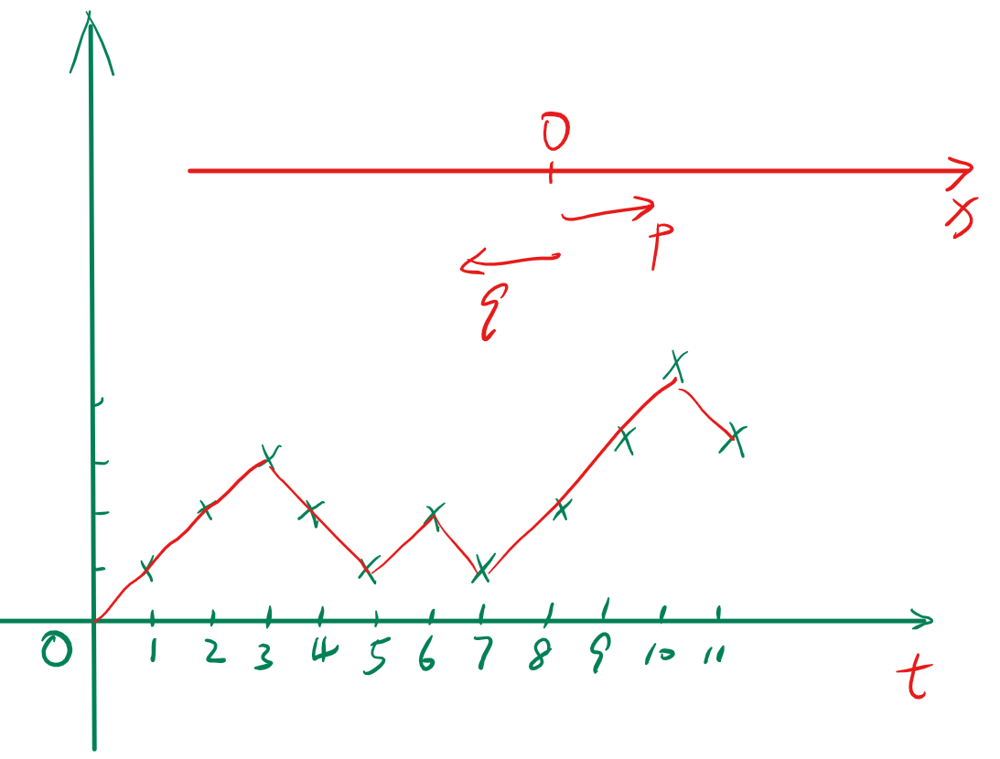

一维随机游动
在随机过程的定义 一节中，我们定义了基于概率空间\((\Omega,\mathcal{F},P)\)的随机过程\(\{\xi(\omega,t),t\in T\}\)。针对 参数\(T\)和\(\xi_{t}(\omega)\)的状态取值是连续的或者离散的，我们有四种随机过程。
今天，我准备讨论一种随机过程，这种随机过程的参数值是离散的，每个离散时刻的随机变量的可能状态也是离散的。我们称这样的随机过程为离散参数离散值的随机过程。今天的这个过程又叫做一维随机游动。具体描述为：
设有一质点在\(x\)轴上做随机游动，即在\(t=0\)时，质点位于\(x\)轴的原点\(0\)，在\(t=1,2,\ldots \)时质点可以在\(x\)轴上正向或反向移动一个单位距离。做正向移动一个单位距离的概率为\(p\)，做反向移动一个单位距离的概率为\(q = 1-p\)。经过时间\(n\)，质点偏离原点的距离为\(k\)，为处于\(k\)的概率是多少？
首先，我们画出一个可能的随机游动结果：

图 1: 一个随机游动的样本函数
设质点每次移动的距离为\(\xi_{i}\)，\(\xi_{i}\)的取值有两种可能\(\{+1,-1\}\)，且有：
\begin{eqnarray} \label{eq:4} p(\xi_{i} = +1)&=& p \\ p(\xi_{i} = -1)&=& q = 1-p \\ \end{eqnarray}设质点在\(t=n\)时远离原点的距离是\(\eta_{n}\)，则\(\eta_{n}\)也是一个随机变量。于是：
\begin{equation} \label{eq:1} \eta_{n} = \sum_{i=1}^{n}\xi_{i},\eta_{0} = 0 \end{equation}又设质点每次游动与该质点所处的位置无关，当\(i\neq k\)时，\(\xi_{i},\xi_{k}\)是相互统计独立的随机变量。图1 给出了\(\eta_{n}\)的样本函数。
如果在\(n\)次游动中有\(m\)次是正向移动，则\(n-m\)次是反向移动。则:
\begin{equation} \label{eq:2} \eta_{n} = \sum_{i=1}^{n}\xi_{i} = m(+1) + (n-m)(-1) = 2m -n = k \end{equation}即，\(m = (n+k)/2\)是\(n\)次游动中正向游动的次数。所以有：
\begin{eqnarray} \label{eq:3} P(\eta_{n} = k)&=&\binom{n}{m}p^{m}q^{n-m} \\ &=& \binom{n}{\frac{n+k}{2}}p^{\frac{n+k}{2}}q^{\frac{n-k}{2}} \end{eqnarray}上式中\(m\)是正整数，说明\(n,k\)同奇偶。